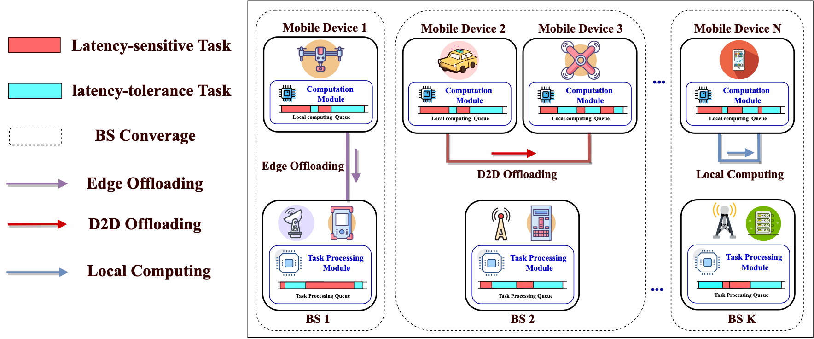
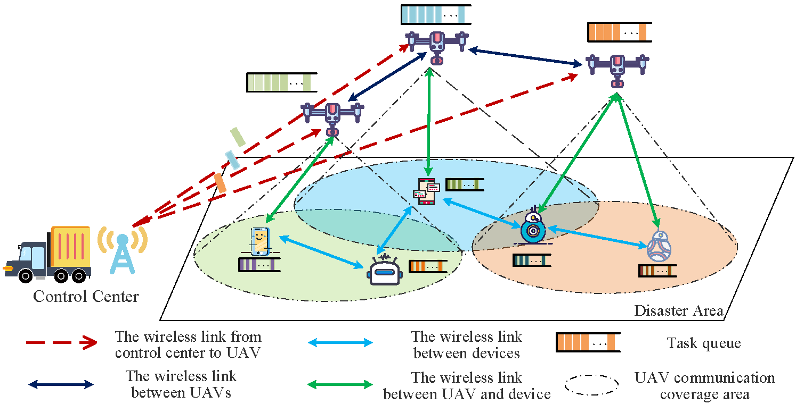
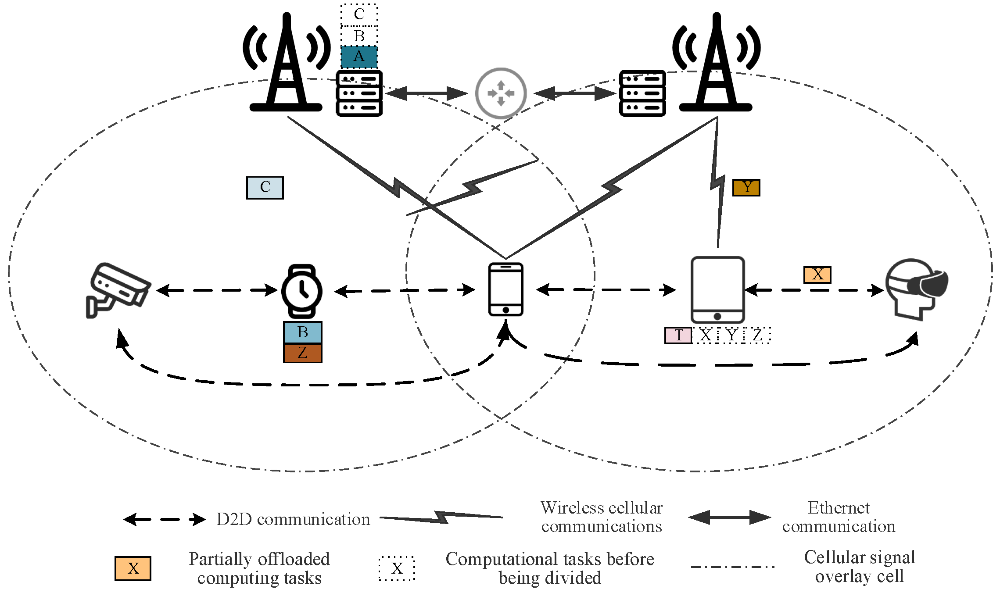

Zhaocheng Niu (牛照程) |
News
- [2023.07] Attend ACM Turing Conference 2023 as a volunteer!
Research Interest
I am working in Internet of Things (IoT). Currently, I focus on the following research topics:- Mobile Edge Computing (MEC)
- Task Offloading
Education
- 2020.09-now Pursuing Ph.D of software engineering in School of Computer Science and Technology, Xidian University.
Supervisor: Prof. Hui Liu & Prof. Junzhao Du - 2018.09-2020.06 M.E.Candidate of Electronic and communication engineering in School of Telecommunications Engineering,
Xidian University. Supervisor: Prof. Juntao Gao - 2014.09-2018.06 B.E. of Communication Engineering in School of Physics and Electronic-Electrical Engineering,
Ningxia University.
Publications
Journals:
|  |
Distributed Hybrid Task Offloading in Mobile Edge Computing: A Potential Game Scheme Zhaocheng Niu, Hui Liu, Yiming Ge, Junzhao Du IEEE Internet of Things Journal (IEEE INTERNET THINGS), 2024. (SCI Q1, IF=10.6) [Paper] |
|  |
Task scheduling with UAV-assisted dispersed computing for disaster scenario Zhaocheng Niu, Hui Liu, Xiaomin Lin, Junzhao Du IEEE Systems Journal (IEEE SYST J), 2022. (SCI Q2, IF=4.4) [Paper] |
|  |
Genetic algorithm for delay efficient computation offloading in dispersed computing Hui Liu, Zhaocheng Niu, Junzhao Du, Xiaomin Lin Ad Hoc Networks , 2023. (CCF C, SCI Q2, IF=4.8 ) [Paper] |
Conferences:
 |
A Performance Evaluation Method of Load Balancing Capability in SaaS Layer of Cloud Platform Hui Liu, Zhaocheng Niu, Tiancheng Wu, Junzhao Du, Feng Zhang, Haoyu Bi 2021 International Conference on Computer Network Security and Software Engineering (CNSSE 2021), 2021. (EI) [Paper] |
Membership:
- ACM, Student Member
Journal Reviewer:
- IEEE Sensors Journal (IEEE SENS J)
- Peer-to-Peer Networking and Applications (PEER PEER NETW APPL)
Awards and Honors
- 2023.07, ACM Turing Conference 2023 Volunteers | ACM图灵大会2023志愿者
- ...
Last updated on August 2, 2023.